| Content assist |
Content assist provides you
with a list of suggested completions for partially entered strings.
In the Java editor press Ctrl+Space or invoke Edit >
Content Assist.
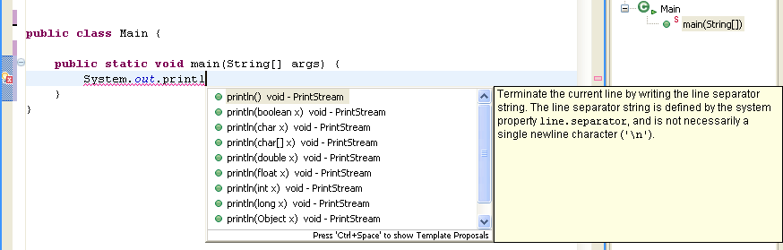
|
| Content assist in
Javadoc comments |
Content assist is also
available in Javadoc comments.
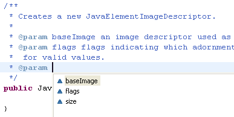
|
Suppress types in code
assist
 |
To exclude certain types from appearing in content assist, use the type
filter feature configured on the Java > Type Filters
preference page. Types matching one of these filter patterns
will not appear in the Open Type dialog and will not be available to
code assist, quick fix and organize imports. These filter patterns
do not affect the Package Explorer and Type Hierarchy views.
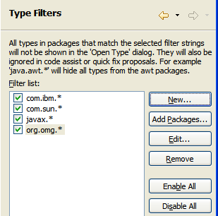 |
| Content assist for
variable, method parameter and field name completions |
You can use content assist to speed up the creation of fields, method
parameters and local variables. With the cursor positioned after the
type name of the declaration, invoke Edit > Content Assist
or press Ctrl+Space.
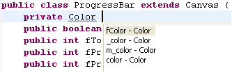
If you use a name prefix or suffix for fields, local variables or
method parameters, be sure to specify this in the Code Style
preference page (Window > Preferences > Java > Code
Style).
|
| Parameter Hints |
With the cursor in a method
argument, you can see a list of parameter hints. In the Java Editor
press Ctrl+Shift+Space or invoke Edit > Parameter Hints.
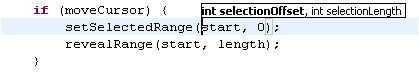
|
| Content assist on
anonymous classes |
Content assist also
provides help when creating an anonymous class. With the cursor
positioned after the opening bracket of a class instance creation,
invoke Edit > Content Assist or press Ctrl+Space.

This will create the body of the anonymous inner class including all
methods that need to be implemented. |
| Toggle between
inserting and replacing code assist |
When code assist is invoked
on an existing identifier, code assist can either replace the
identifier with the chosen completion or do an insert. The
default behavior (overwrite or insert) is defined in Window >
Preferences > Java > Editor > Code Assist.
You can temporarily toggle the behavior while inside the content
assist selection dialog by pressing and holding the Ctrl key while
selecting the completion. |
| Incremental content
assist |
Check Insert common prefixes automatically on the Java
> Editor > Syntax preference tab to use shell-style
incremental completion in the Java editor. If the available
completions do not have a common prefix, the proposal popup is
displayed. |
| Create Getter and
Setters dialog |
To create getter and setter
methods for a field, select the field's declaration and invoke Source
> Generate Getter and Setter.
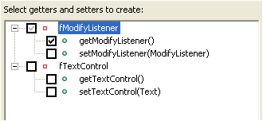
If you use a name prefix or suffix be sure to specify this in the
Code Style preference page (Window > Preferences > Java >
Code Style) |
Use content assist to
create Getter and Setters
|
Another way to create
getters and setters is using content assist. Set the cursor in the
type body between members and press Ctrl+Space to get the proposals
that create a getter or setter method stub.
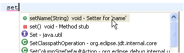 |
| Delete Getters and
Setters together with a field |
When you delete a field
from within a view,
Eclipse can propose deleting its Getter and Setter methods. If you
use a name prefix or suffix for fields, be sure to specify this
in the Code Style preference page (Window > Preferences >
Java > Code Style). |
| Create delegate methods |
To create a delegate method
for a field select the field's declaration and invoke Source >
Generate Delegate Methods. This adds the selected methods
to the type that contains a forward call to delegated methods. This
is an example of a delegate method:
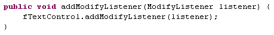
|
| Use Drag & Drop for
refactoring |
You can move Java
compilation units between packages by Drag & Drop - all missing
imports will be added and references updated. |
| Use Drag & Drop to
move and copy Java code elements |
You can move and copy Java
elements such as methods and fields by Drag & Drop. This will not
trigger refactoring - only the code will be copied or moved. |
| Use Templates to create
a method |
You can define a new
template (Preferences > Java > Editor > Templates)
that contains a method stub. Templates are shown together with the Content
Assist (Ctrl+Space) proposals.
There are also existing templates, such as 'private_method',
'public_method', 'protected_method' and more.
Use the Tab key to navigate between the values to enter
(return type, name and arguments).
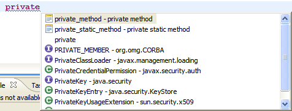
|
| Use Quick Fix to create
a new method |
Start with the method
invocation and use Quick Fix (Ctrl+1) to create the method.
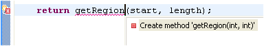
|
Use Quick Fix to change
a method signature
|
Add an argument to a method
invocation at a call site. Then use Quick Fix (Ctrl+1) to add the
required parameter in the method declaration.
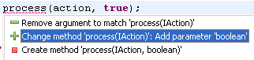
|
Use Content Assist to
create a constructor stub
|
At the location where you
want to add the new constructor, use code assist after typing the
first letters of the constructor name.
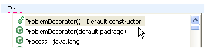 |
Create new fields from
parameters
|
Do you need to create new
fields to store the arguments passed in the constructor? Use quick
assist (Ctrl + 1) on a parameter to create the assignment and the
field declation and let Eclipse propose a name according to your Code
Style preferences.
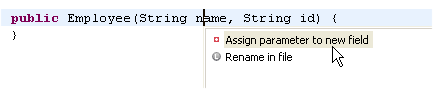 |
| Use Content Assist to
override a method |
Invoke Content Assist
(Ctrl+Space) in the type body at the location where the method
should be added. Content assist will offer all methods that can be
overridden. A method body for the chosen method will be created.
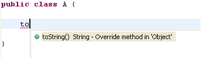
|
| Use Quick Fix to add
unimplemented methods |
To implement a new
interface, add the 'implements' declaration first to the type.
Even without saving or building, the Java editor will underline the
type to signal that methods are missing and will show the Quick Fix
light bulb. Click on the light bulb or press Ctrl+1 (Edit >
Quick Fix) to choose between adding the unimplemented methods or
making your class abstract.
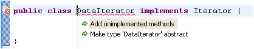
|
| Override a method
from a base class |
To create a method that
overrides a method from a base class:
Select the type where the methods should be added and invoke Source >
Override / Implement Methods. This opens a dialog that lets you
choose which methods to override.
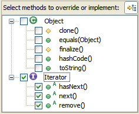
|
| Rename in File |
To quickly do a rename that
doesn't require full analysis of dependencies in other files, use the
'rename in file' Quick Assist. In the Java Editor, position the
cursor in an identifier of a variable, method or type and press Ctrl+1
(Edit > Quick Fix)
The editor is switched to the linked edit mode (like templates) and
changing the identifier simultaneously changes all other references
to that variable, method or type.
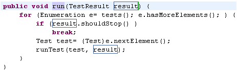
|
| Use Quick Fix to handle
exceptions |
Dealing with thrown exceptions is
easy. Unhandled exceptions are detected while typing and marked with
a red line in the editor.
- Click on the light bulb or press Ctrl+1 to surround the
call with a try catch block. If you want to include more statements
in the try block, select the statements and use Source >
Surround With try/catch Block. You can also select individual
statements by using Edit > Expand Selection to and
selecting Enclosing, Next or Previous.
- If the call is already surrounded with a try block, Quick Fix
will suggest adding the catch block to the existing block.
- If you don't want to handle the exception, let Quick Fix add a
new thrown exception to the enclosing method declaration
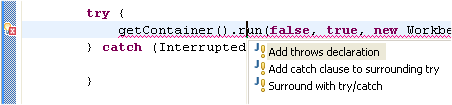
At any time you can convert a catch block to a thrown exception. Use
Ctrl+1 (Edit > Quick Fix) on a catch block.
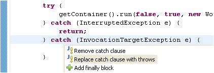
|
| Less typing for
assignments |
Instead of typing an assignment, start
with the expression that will be assigned.
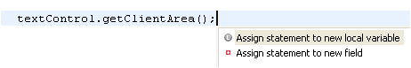
Now use Ctrl+1 (Edit > Quick Fix) and choose 'Assign
statement to new local variable' and Quick Assist will guess a
variable name for you.
|
Less work with cast
expressions
|
Don't spend too much time with typing casts. Ignore them first and use quick assist to add them after
finishing the statement.
For example on assignments:
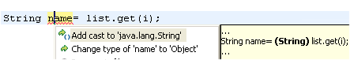
Or in for method arguments:
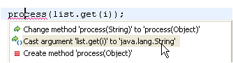
Or for method call targets
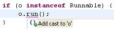 |
| Surround lines |
To surround statements with an if /
while / for statement or a block, select the lines to surround and
press Ctrl+1 (Edit > Quick Fix). This lists all templates
that contain the variable ${line_selection}.
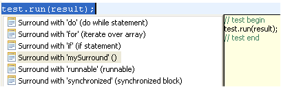
Templates can be configured on Window > Preferences > Java
> Editor > Templates. Edit the corresponding templates or
define your own templates to customize the resulting code.
|
| Create your own
templates |
To create your own templates, go to the Java > Editor
> Templates preference page and press the New button to
create a template. For example, a template to iterate backwards in an
array would look like this:
for (int ${index} = ${array}.length - 1; ${index} >= 0; ${index}--){
${cursor}
} |
| Code assist can insert
argument names automatically |
You can have code assist insert argument names automatically on
method completion. This behavior can be customized on the Java
> Editor > Code Assist preference page (see the Fill
argument names on method completion checkbox.) For example, when
you select the second entry here,
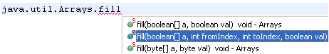
code assist will automatically insert argument names:
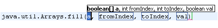
you can then use the Tab key to navigate between the
inserted names.
Code assist can also guess argument names - based on their
declared types. This can be configured by the Guess filled
argument names checkbox on the Java > Editor > Code
Assist preference page.
|
| Remove surrounding
statement |
To remove a surrounding statement or
block, position the cursor at the opening bracket and press Ctrl+1
(Edit > Quick Fix).
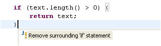
|
How was that word spelled again?
|
You can enable spell-checking support in the Java editor on the
Java > Editor > Spelling preference page. Spelling errors
are displayed in the Java editor and corresponding Quick Fixes are available:

You can make the
dictionary also available to the content assist. However, there is currently no dictionary included in Eclipse. The required format
is just a list of words separated by newlines and the Quick Fixes allow you to
add new words to the dictionary on-the-fly. Contributions of dictionaries would be welcome.
|
| Structured selections |
You can quickly select Java code
syntactically using the Structured Selection feature.
Highlight the text and press Alt+Shift+Arrow Up or select Edit
> Expands Selection To > Enclosing Element from the menu
bar - the selection will be expanded to the smallest Java-syntax
element that contains the selection. You can then further expand the
selection by invoking the action again. |
| Find the matching
bracket |
To find a matching bracket select an
opening or closing bracket and press Ctrl+Shift+P (Navigate >
Go To > Matching Bracket). You can also double click
before an opening or after a closing bracket - this selects the text
between the two brackets.
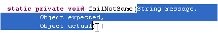
|
| Smart Javadoc |
Type '/**' and press Enter. This
automatically adds a Javadoc comment stub containing the standard
@param, @return and @exception tags.
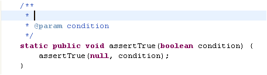
The templates for the new comment can be configured in Window
> Preferences > Java > Code Style > Code Templates |
| Use the local history
to revert back to a previous edition of a method |
Whenever you edit a file,
its previous contents are kept in the local history. Java tooling
makes the local history available for Java elements, so you can
revert back to a previous edition of a single method instead of the
full file.
Select an element and use Replace With > Local History
to revert back to a previous edition of the element.
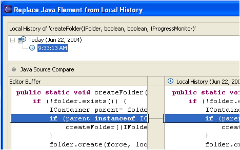
|
| Use the local history
to restore removed methods |
Whenever you edit a file,
its previous contents are kept in the local history. Java tooling
makes the local history available for Java elements, so you can
restore deleted methods selectively.
Select a container and use Restore from Local History to
restore any removed members.
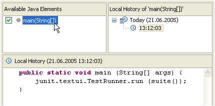
|
| Customizable code
generation |
The Java > Code Style
> Code Templates preference page allows you to customize
generated code and comments in a similar way to normal templates.
These code templates are used whenever code is generated. (These new
templates replace the 'filecomment' and 'typecomment' templates
previously used for code generation in R2.1.)
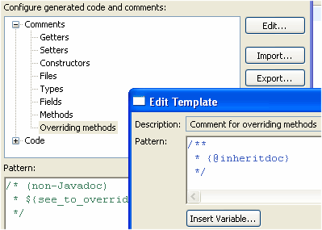
The check box 'Automatically add comments...' allows you to decide
if features that create new methods or types add comments
automatically or if they are added explicitly with 'Add
Javadoc Comment'. |
| Sort members |
You can Sort Members
of a Java compilation unit according to a category order defined in
the Java > Appearance > Members Sort Order preference
page.
You'll find the action under Source > Sort Members |
| Wrap Strings |
You can have String literals wrapped when you edit them. For
example, if you have code like this:
String message= "This is a very long message.";
position your caret after the word "very" and press Enter.
The code will be automatically changed to:
String message= "This is a very" +
" long message.";
This behavior can be customized in the Java > Editor >
Typing preference page.
|
Smart Typing and how to control it
|
The Java editor's Smart Typing features ease your daily work. You can configure
them on the Typing tab of the Java > Editor preference page.
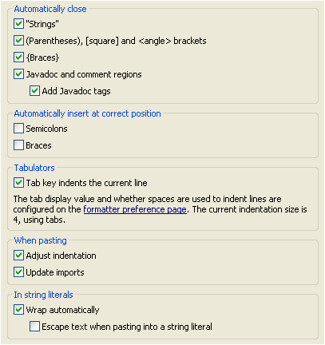
Note that the Smart semicolon positioning and Smart brace positioning are
disabled by default. When Close brackets and parenthesis is enabled, you usually
have to press an additional key to position the cursor behind the automatically inserted
bracket or parenthesis before entering an opening brace or semicolon.
Smart semicolon positioning and Smart brace positioning automatically
position the semicolon or brace behind the inserted bracket or parenthesis. You can
undo this automatic positioning by pressing backspace right afterwards.
|
Fix your code
indentation with one key stroke
|
A useful feature is Source
> Correct Indentation. Select the code where the indents are
incorrect and invoke the action. |
Quick menus for source and
refactoring actions
|
The refactoring and source actions can be accessed via a quick
menu. Select the element to be manipulated in the Java editor or in a
Java view and press Alt+Shift+S for the quick source menu or
Alt+Shift+T for the quick refactor menu.
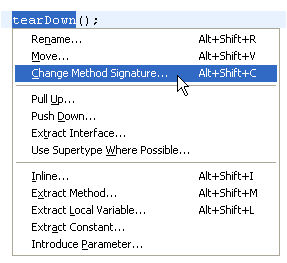 |
| Find unused code |
The Java compiler detects
unreachable code, unused variables, parameters, imports and unused
private types, methods and fields.
The setting is on the Java > Compiler preference page.
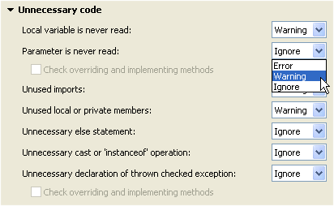
These settings are also detected as you type and a quick fix is
offered to remove the unneeded code. |
Javadoc comment handling
|
The Eclipse Java compiler can process Javadoc comments. Search
reports references in doc comments, and refactoring updates these
references as well. This feature is controlled from the Java >
Compiler > Javadoc preference tab (or set for an individual
project using Project > Properties > Java Compiler >
Javadoc).
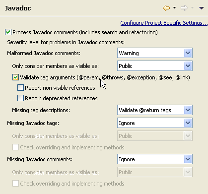
When turned on, malformed Javadoc comments are marked in the Java editor and can be fixed using Edit
> Quick Fix (Ctrl+1):
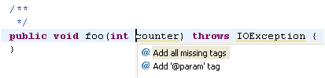
|


 (or
if
tests are finished) and the JUnit view will appear. This behavior can
be configured via the Java > JUnit preference page.
(or
if
tests are finished) and the JUnit view will appear. This behavior can
be configured via the Java > JUnit preference page.